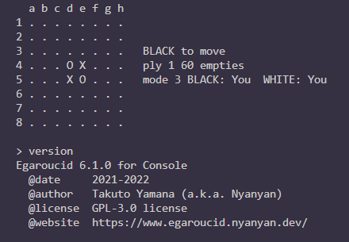
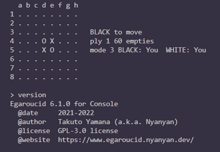

Egaroucid
世界最強レベルAI搭載 オセロ研究支援アプリ
Egaroucidは世界最強クラスのオセロAIを搭載した無料のオセロ研究・対戦用アプリです。搭載AIの軽量バージョンはCodinGame Othelloで世界1位になったものです(2022年10月現在)
ラインナップ
| 名称 | 対応OS | 対応言語 | 最新バージョン | 備考 |
| Egaroucid | Windows | 日本語/英語 | 6.0.0 | ダウンロード |
| Egaroucid for Console | Windows/Linux | 英語 | 開発中 | 詳細 |
| Egaroucid for Web | 任意のブラウザ | 日本語/英語 | 6.0.0 for Web | 遊ぶ |
 

特徴
- 正確で高速な独自の評価関数
- 高速な探索
- AIとの対局
- 対局解析
- 評価値・うみがめ数の表示
- 各種入出力
- bookを自動/手動で作成/修正
- Egaroucid/Edax形式bookの追加・統合
- 定石名の表示
導入する
Egaroucid
ダウンロードページより自分の環境に合ったものをダウンロードし、インストーラを実行してください。Egaroucid for Console
コンソール版導入ページの解説に従ってダウンロードまたはコンパイルをしてください。Egaroucid for Web
ダウンロードやインストールの必要はありません。Web版ページで今すぐ遊べます。謝辞
開発に多大なる貢献をしていただいた方々に感謝します(順不同、敬称略)。UIデザイン
- 金子映像
ユーザテスト
- 出本大起
- まてぃか
- Nettle蕁麻
- okojoMK
- 高田征吾
- まだらぬこ
- 長野泰志
- trineutron
- クルトン
関連リンク
Egaroucid GitHub レポジトリ自作最弱オセロAI
作者Webサイト
作者Twitter